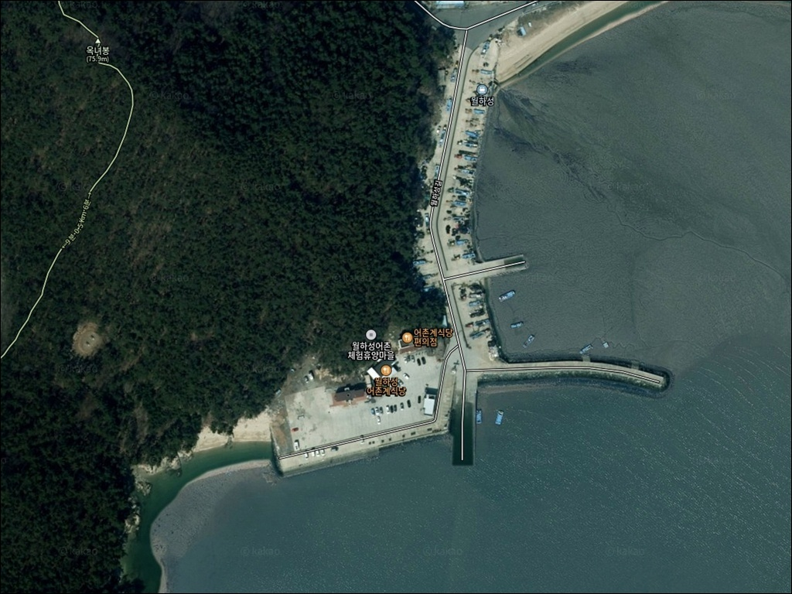
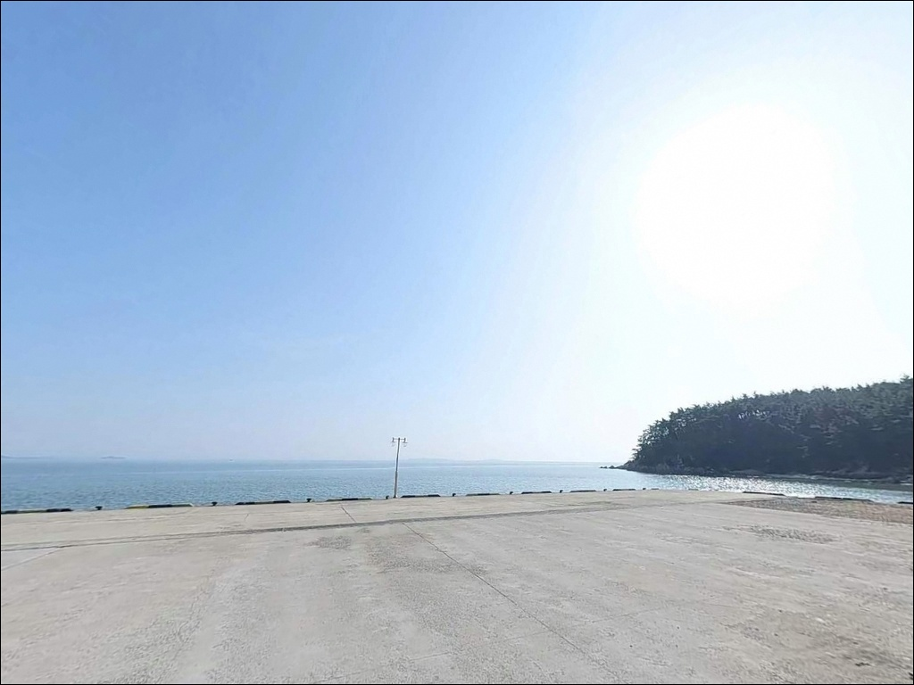
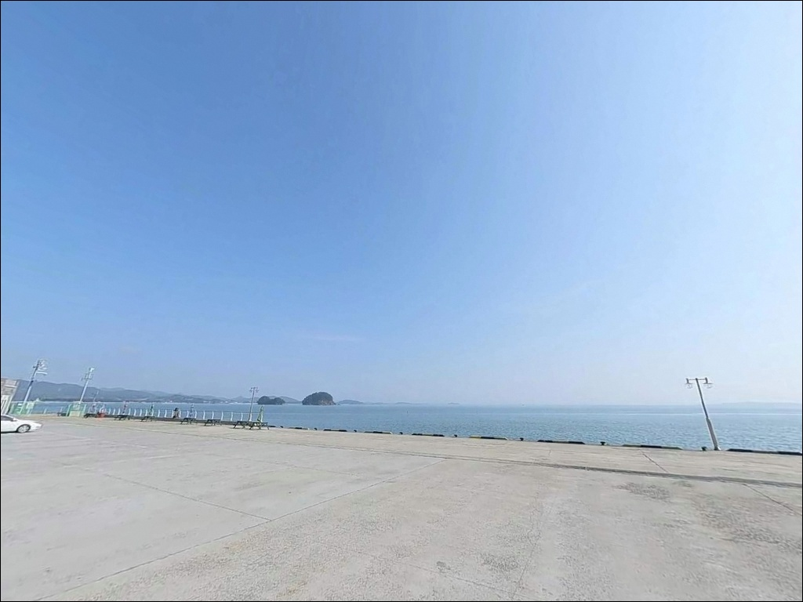
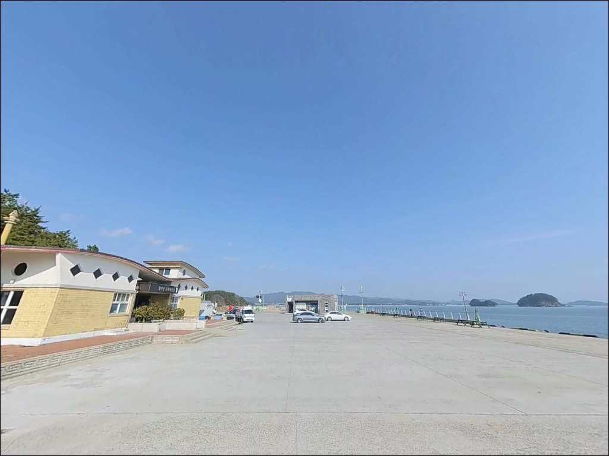
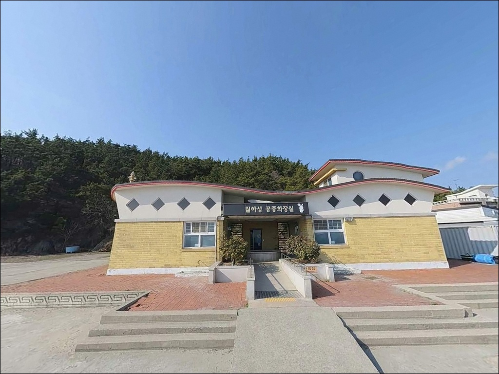
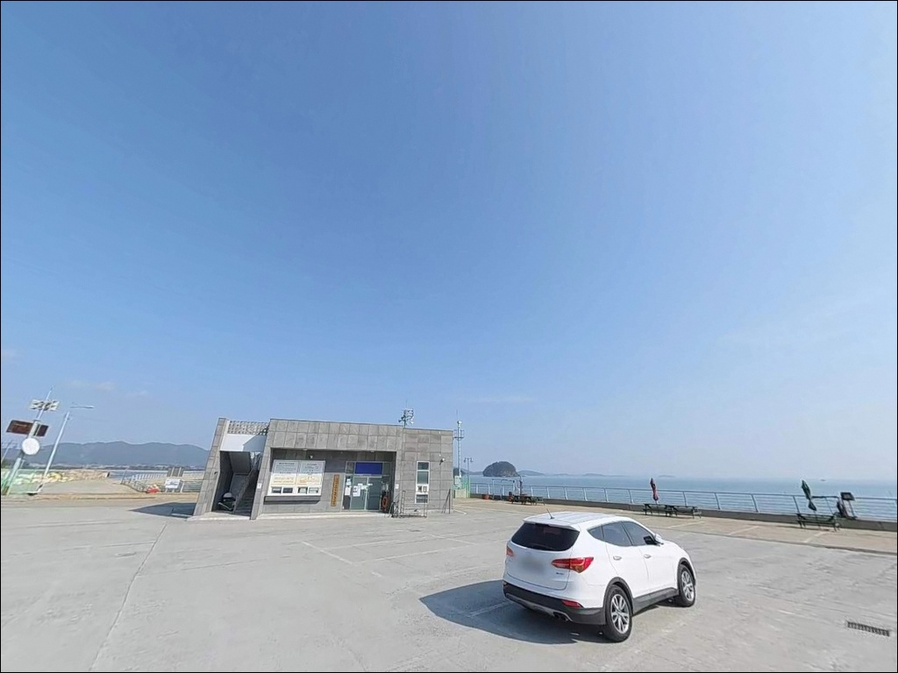
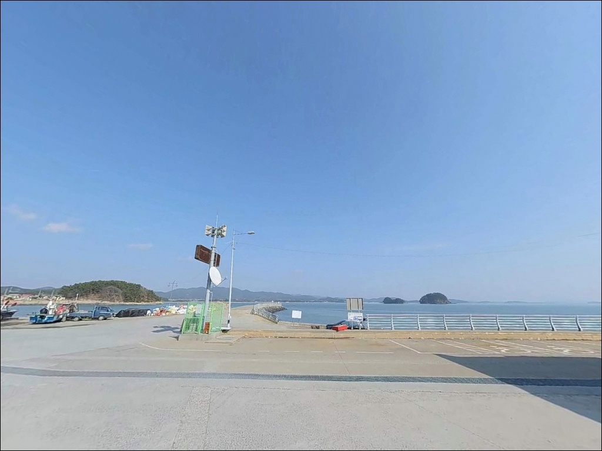
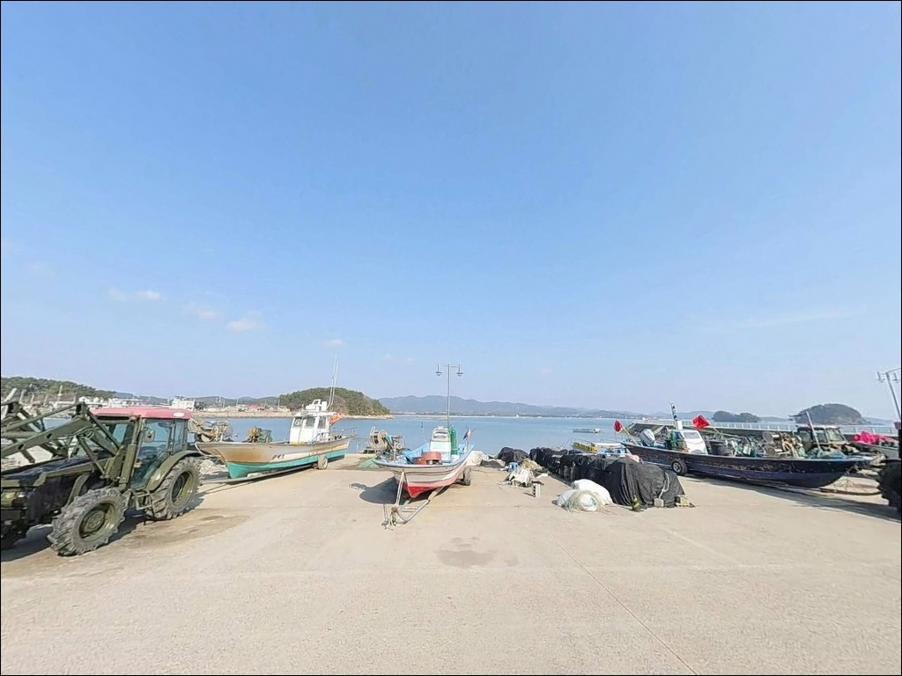
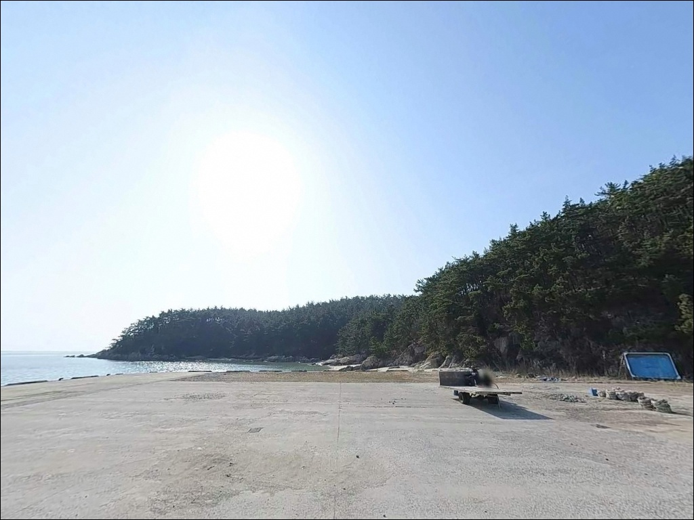

월하리선착장, 충남 서천군 노을빛이 스며드는 차박, 낚시 겸용 감성 장소
이 페이지에는 광고(제휴 링크 포함)가 있으며, 광고 링크를 통해 구매하면 운영자가 판매 수익 또는 수수료를 받을 수 있습니다. 포인트 사진: 카카오맵 스카이뷰·로드뷰. 이 페이지의 지도·사진 이미지는 카카오맵의 실제 서비스 이미지와 다를 수 있습니다.


포인트 안내
월하리선착장
충남 서천군 서면 월호리 585-8
물때 확인 없이 서천 서면 선착장을 찾으면
간조 시간대에 맞닥뜨리는 갯바닥이
그날 낚시를 통째로 날립니다.
월하리선착장은 서해 내만 갯벌 지형 특성상
들물 시간을 중심으로 낚시 가능 구간이 결정되는
포인트입니다.
서천군 서면 월호리,
비인만 해안선 안쪽에 위치한 소형 선착장으로
월하성어촌체험마을과 인접해 있습니다.
대형 방파제 포인트보다는
조용한 어촌 분위기의 근거리 생활낚시 환경에
가까운 곳입니다.
이 글은 월하리선착장의
진입 환경, 물때 판단 기준, 지형 기반 낚시 여건,
인근 대안 포인트 동선에 집중합니다.
조황 단정이나 특정 어종 보장은
이 글의 범위에 포함되지 않습니다.

1. 진입 동선과 포인트 접근 환경
서천 서면 해안도로(월하성길 방향)를 따라
마을 안쪽으로 진입하는 구조입니다.
국가·지방어항이 아닌 소형 어촌 선착장 특성상
마을길 수준의 좁은 도로를
통과해야 하는 구간이 있습니다.
버스 회차 공간이 갖춰진 지역이라
소형~중형 승용차 기준 진입은 가능한 수준이지만,
대형 SUV나 캠핑카는 회차 공간을 사전에 확인하는 편이 좋습니다.
주차는 선착장 입구 도로변과
어촌체험마을 인근 공터를
활용하는 방식이 일반적입니다.
다만 공식 주차 허용 여부는
현장 표지판으로 직접 확인해야 하며,
어선 이동 동선을 막지 않는 자리가
기본 매너입니다.
서울시 서천연수원과 인접한 위치라
주말 방문객이 있는 날에는
주차 공간 경쟁이 생길 수 있습니다.
평일 이른 아침 진입이 가장 여유 있는 조건입니다.

2. 차박 여건과 야간 체류 조건
월하성 어촌마을은 민가와
체험 시설이 밀집된 소규모 마을입니다.
차박 전용 공간이 따로 있는 구조가 아니라,
주차 가능한 공터 한쪽에서
짧게 머무는 방식에 가깝습니다.
공식 야영 허용 여부는 현장에서 직접 확인해야 하며,
단정하기 어려운 항목입니다.
야간에는 마을 내부 가로등이 일부 있지만
선착장 끝단 쪽은 조명이 없을 수 있습니다.
서해 특성상 기상에 따라 바람이 강해지는 날이 있어,
당일 예보 확인 후 체류 여부를 결정하는 것이
좋습니다.
낚시 후 하룻밤을 목적으로 한다면
차박 전용 여건이 갖춰진 홍원항이나
춘장대 방면이 훨씬 나은 조건입니다.


3. 주변 편의시설 및 인프라 현황
선착장 인근에 이마트24 서천월하리점이 있어
차량으로 1분 내 이동이 가능합니다.
간단한 식음료와 기본 소품은 이곳에서 해결할 수 있습니다.
식당은 진입로 인근에
칼국수 위주의 소규모 식당이 있으며,
운영 여부는 방문 전 직접 확인하는 것이 좋습니다.
반경 3km권에는 마량포구가 있습니다.
서천 서면의 대표 포구 중 하나로
낚시 정보 접근성이 좋은 곳이며,
마량포구 일대에는 마량항 방파제와
인근 식당·상점이 모여 있습니다.
월하리에서 부족한 소품이나 정보는
마량포구에서 보충하는 동선이 효율적입니다.

4. 방문 전 확인해야 할 준비사항
월하리선착장을 찾기 전에
가장 먼저 확인할 것은 물때입니다.
서해 내만 갯벌 지형은 간조 시 갯바닥이 드러나
낚시 자체가 불가능해지는 구조입니다.
바다타임에서 서천 서면 기준 물때를 확인하고
만조 전 2시간, 만조 후 2시간의 들물 구간을
핵심 낚시 시간대로 잡는 것이 기본 전략입니다.
출발 당일 아침 기상 예보를 재확인하는 것도
헛걸음을 막는 조건입니다.
서해안은 기상 변화가 빠른 편이어서
전날 예보만 믿고 움직이면
현장에서 낚시 여건이 달라져 있는 경우가 있습니다.
월하리선착장 인근 해역은
서천갯벌 람사르습지 구역과 경계가 맞닿는 지역입니다.
서천갯벌은 환경 보호가 중요한 해역으로,
갯벌 생물 채취 등 일부 활동이 제한될 수 있습니다.
낚시 규정 관련 사항은 사전에
서천군청 또는 인근 낚시점을 통해 확인해 두는 것이
안전한 준비입니다.
선착장 어민 작업 구역에 장비를 두지 않는 것,
쓰레기를 직접 수거해 귀가하는 것,
야간 낚시 시 구명조끼와 헤드랜턴을 챙기는 것은
이 포인트 방문의 기본 매너입니다.

5. 들물 시간대에 낚시 여건이 달라지는 이유
월하리선착장이 자리한 비인만 해안은
전형적인 서해 내만형 갯벌 지형입니다.
간조 시에는 선착장 주변까지
갯바닥이 드러날 만큼 수심이 낮아지는 구조로,
낚시 가능 시간대가 들물 전후로
집중될 수밖에 없습니다.
물때를 맞추지 않으면 어떤 채비를 가져오더라도
서해 갯벌형 선착장에서는 낚시 자체가 불가능해집니다.
선착장 끝단 방향은 수로 역할을 하는 구간이 있어,
상대적으로 수심이 유지되는 편입니다.
이 구간은 들물 초·중반에
조류가 흐르기 시작하면서
입질이 살아나는 타이밍을 만들어냅니다.
선착장 끝단과 수로 경계를 먼저 파악하고
자리를 잡는 것이 이 포인트 공략의 출발점입니다.
내만 구조 특성상 파도 영향은 적은 편이며
조류 흐름도 비교적 완만합니다.
단, 들물·날물 교체 전후에는
짧은 시간 동안 조류 흐름이 생겨
입질이 집중되는 경향이 있습니다.
정조 타이밍을 미리 계산해 두고
들물 중반에 자리를 잡는 것이 이 포인트에서
가장 효율적인 시간 운용 방법입니다.
출조 전 최신 조황은
"월하리선착장 낚시", "서천 서면 조황",
"마량포구 조황" 등으로 검색해 확인하시기 바랍니다.


6. 포인트에 어울리는 낚시 스타일
이 포인트에서 가장 기본적인 낚시는
원투낚시입니다.
들물 시간대에 선착장 끝단에서
수로 방향으로 채비를 투척하면
바닥층 어종을 노릴 수 있는 구조입니다.
서천 서면 해안권의 공통 특성상
망둥어, 숭어, 우럭 계열을 기대해볼 수 있는 지형이며,
봄철에는 도다리류도 가능성이 있습니다.
소형 루어를 활용한 라이트 게임도
이 포인트 지형과 잘 어울립니다.
내만 수면이 유지되는 들물 중반 이후
선착장 주변 수로 경계를 따라
소형 지그헤드로 천천히 탐색하는 방식이 맞습니다.
농어나 숭어를 노리는 워킹 스타일은
들물이 어느 정도 오른 뒤 시작하는 것이
조건에 맞습니다.
찌낚시는 내만의 잔잔한 수면 조건을
활용할 수 있는 방식입니다.
들물 중반 선착장 측면에서
시도해볼 만한 스타일이며,
채비가 가벼울수록 이 포인트의 수심 조건에
더 잘 맞습니다.
에깅은 같은 서면 해안권에서
가을 시즌을 중심으로 시도되는 방식입니다.
갑오징어, 쭈꾸미 에깅이
비인만 일대에서 시즌성으로 이루어지며,
9월 전후 들물 시간대에 선착장 끝단을 공략하는 방식이
이 지형 조건에 어울립니다.
다만 내만 수심 상태에 따라 달라질 수 있어
사전 조황 확인이 필요합니다.

7. 대안 포인트와 플랜 B 동선
월하리선착장에서 물때가 맞지 않거나
낚시 여건이 여의치 않을 때는
마량포구 방파제가 가장 가까운 대안입니다.
월하리에서 약 3km 거리로,
같은 비인만 해안선에 위치하며
낚시 정보가 축적된 포인트입니다.
마량항 방파제는 바다타임 낚시 포인트로도 등록된 곳으로,
조황 정보 접근성이 좋습니다.
더 큰 규모의 포인트를 원한다면
홍원항 방파제가 1순위 대안입니다.
서천 서면 도둔리 소재로
월하리에서 약 7~10km 거리입니다.
서방파제 약 500m, 동방파제 약 300m의
규모 있는 방파제를 갖추고 있으며,
감성돔, 우럭, 학꽁치, 숭어 등
다양한 어종이 알려진 서해 대표 포인트입니다.
월하리선착장은 단독 출조보다
마량포구·홍원항과 묶어 운영할 때
효율이 높아지는 포인트입니다.
차박을 함께 계획하는 분이라면
홍원항 방면 또는 춘장대해수욕장(약 5km)이
월하리보다 여건이 훨씬 낫습니다.
춘장대해수욕장은 서천군 공식 야영지 운영 기록이 있어
차박 여건을 확인하기 좋은 곳입니다.

들물 한 타이밍,
잘 잡으면 월하리선착장이 달라집니다
생활낚시 위주의 가벼운 출조를 즐기는 낚시인이라면
월하리선착장의 조용한 어촌 분위기와
내만형 지형 조건은 잘 맞는 구조입니다.
대물 포인트는 아니지만,
서해 갯벌의 들물 리듬을 타는
원투낚시나 소형 루어 낚시를 즐기는
분이라면 한 번쯤 들러볼 만한 포인트입니다.
반면 물때 확인 없이 무작정 찾아가면
갯바닥 앞에서 장비만 꺼내다 돌아오는 상황을
만날 수 있습니다.
물때 확인, 람사르습지 관련 규정 사전 파악,
마량포구 또는 홍원항 병행 동선,
이 세 가지를 갖추고 출발하면
월하리에서의 낚시가 헛걸음이 되지 않습니다.
마량포구 방파제를 기점으로
물때 여건을 확인하며 월하리선착장을 함께 탐색하는 동선은
서천 서면 해안선을 처음 찾는
낚시인에게도 실용적인 출조 방식이 됩니다.